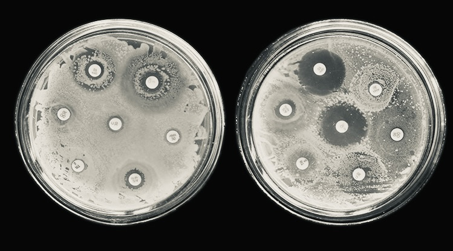

What is Antimicrobial Resistance?
Antimicrobial resistance (AMR) occurs when microorganisms such as bacteria, viruses, fungi, and parasites change over time and no longer respond to medicines, making infections harder to treat and increasing the risk of disease spread, severe illness, and death. The World Health Organization has declared AMR as one of the top 10 global public health threats facing humanity.
The Mechanisms Behind Resistance
Bacteria develop resistance through several mechanisms:
- Enzymatic degradation: Producing enzymes like beta-lactamases that destroy antibiotics
- Target modification: Altering the antibiotic target site to prevent binding
- Efflux pumps: Active expulsion of antibiotics from bacterial cells
- Reduced permeability: Decreasing cell wall permeability to prevent antibiotic entry
- Biofilm formation: Creating protective matrices that shield bacteria
Global Impact
The consequences of AMR are staggering. Without effective antimicrobials, the success of modern medicine including major surgery, cancer chemotherapy, and organ transplantation would be compromised. It is estimated that by 2050, AMR could cause 10 million deaths annually worldwide, surpassing cancer as a leading cause of mortality.
Contributing Factors
Several factors accelerate the development and spread of AMR:
- Overuse and misuse: Inappropriate prescription and use of antibiotics in humans and animals
- Poor infection control: Inadequate sanitation and hygiene in healthcare settings
- Lack of new drugs: Declining investment in antimicrobial research and development
- Agricultural practices: Use of antibiotics as growth promoters in livestock
- Environmental contamination: Release of antibiotics into water and soil
Combating AMR: A Multifaceted Approach
Addressing AMR requires coordinated action across multiple sectors:
- Stewardship programs: Optimizing antibiotic use in clinical practice
- Surveillance: Monitoring resistance patterns globally
- Infection prevention: Improving hygiene and vaccination coverage
- Research: Developing new antibiotics, alternatives, and diagnostics
- Public awareness: Educating communities about responsible antibiotic use
Conclusion
AMR is a complex, multifaceted challenge that demands urgent global attention. As researchers, healthcare professionals, and citizens, we all have a role to play in preserving the effectiveness of our antimicrobial arsenal for future generations.